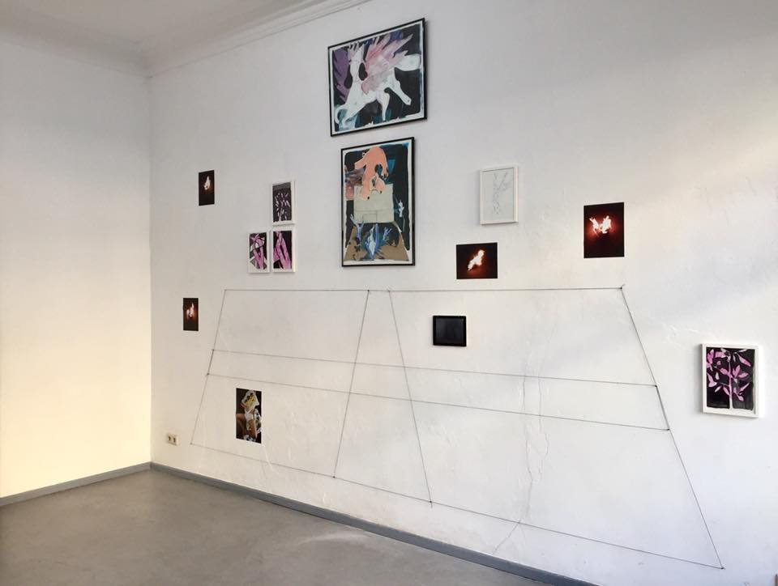
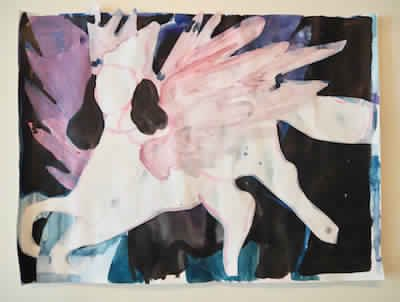

بقلم إسماعيل فايد

معرض «عند منتصف الليل.. لم يكن هناك حدود» - الصورة: Uqbar
جذبني عنوان المعرض، «عند منتصف الليل.. لم يكن هناك حدود»، المعرض في نفس الحي الذي أسكن فيه، حي فيدينج، في شمال غرب برلين. يدور المعرض حول تجارب ثلاثة فنانين باكستانيين ذوي تنشئة دينية إسلامية، بالتقاطع مع هوياتهم «الكويرية»، والخلفية التاريخية لنشأة باكستان كدولة بعد انفصالها عن الهند عشية استقلالها.
كنت أعلم أن فيدينج يسكنها كثير من الأتراك والعرب، فتراءى لي أن المعرض في حالة انسجام فكري جمالي مع سياقه. ما لم أكن أعرفه أن هذا الانسجام يمتد إلى مكان المعرض. ففي طريقي إليه فوجئت بوجود مقر النادي/جمعية الجالية المصرية، على بعد خطوات قليلة من المعرض، فتمتمت في سري: «ربنا يُستر».
تجولت في المعرض، وبدا لي أن معظم الأعمال لا تختلف عن معاصريها، سواء في الأساليب/المنهج أو في الوسائط (الفيديو والطباعة على صفحات كتاب ورسومات على ورق وفوتوغرافيا، إلخ). فمن الممكن أن يكون مثل ذلك المعرض عن أي شيء، وليس بالضرورة عن تاريخ تقسيم الهند أو تنافر الهويات الإسلامية والمثلية.
شمل المعرض ثلاثة أعمال فنية رئيسية: عمل عبد الله قريشي الذي استخدم النص القرآني (سورة الإسراء وحادثة الإسراء والمعراج) خريطة لرسم موضوع تصورات مثالية عن الجنة/الآخرة، وعلاقة ذلك بمكانة المثليين كمجموعة مارقة وآثمة داخل النص، وارتباط تلك التصورات بواقع المثليين المسلمين، سواء في باكستان/الهند أو في المنفى والشتات.
الثاني هو عمل عزيز سهيل الذي استخدم تجربته في زيارة دلهي، كمواطن باكستاني (حدثٌ جلل، ونادرًا ما يتسنى للمواطنين الباكستانيين السفر أو الذهاب إلى الهند)، ونوعية التفاعلات/المحادثات التي خاضها مع أفراد من مجتمع «الميم» في أثناء تلك الزيارة، عبر أحد تطبيقات التواصل الافتراضي، من خلال اقتباس بعض تلك المحادثات، ومحاولة تتبع الحدود التي من المستحيل رسمها، بين ما هو حميمي وما هو سياسي.
العمل الثالث يخص ذو الفقار علي بوتو (حفيد رئيس باكستان الأسبق ذو الفقار علي بوتو، والذي أُعدِم في 1979) الذي يستخدم الثقافة البصرية الشعبية الباكستانية لكشف التناقضات الكثيرة داخل تلك الهوية الدينية وقناعاتها.

معرض «عند منتصف الليل.. لم يكن هناك حدود» - الصورة: Uqbar
لم أكن قد اطَّلعت على أعمال فنانين باكستانيين معاصرين من قبل (الفنانين الثلاث العارضين أصغر مني بخمس سنوات على الأقل)، ولا أعتقد أني اطَّلعت على أعمال تتناول فكرة تقاطع الهويات الإسلامية مع التجربة الكويرية أو المثلية، من فنانين من بلد إسلامي.
عادة ما يصيبني الشك في تلك الأعمال التي تزعم أنها تستلهم تجارب التنشئة الدينية في سياق إسلامي، وإعادة صياغتها لتعكس ذلك البعد الهوياتي الذي دائمًا ما يثير حفيظتي. فمن البديهي أنه لا مكان للجنس في المخيلة المتدينة، أو على الأقل في التراث السني المعاصر. فالتراث السني تحرر وأعيد تقديمه ليعكس فقط موقف الهوية المهددة التي يريد العالم القضاء عليها، وطمس حقيقتها المستنيرة. في ظل تلك الأجواء المليئة بالشك والذهان يصبح الجنس أداء/آلية (كما يقول ميشيل فوكو) لترسيخ السلطة/الولاية الأخلاقية للذات المثالية: الرجل، الغيري المؤمن، الملتزم.
يصبح الجنس، وجُل ما يرتبط به من أدوات هندسة اجتماعية واقتصادية، حق الرجال الغيرين وحكرًا عليهم وعلى مخيلتهم، مع توصيف إطار تشريعي معقَّد لتقرير رغبات الرجل المثالي، السني، الغيري، الملتزم، مالك إربه، الذي يحب النساء، وبداهةً، يخضعن له، بل ودون أدنى شك، يتمناه جميعهن.
يصبح التفسير المعتمَد للنص القرآني سلسلة طويلة من الآيات والأوامر والنواهي التي تبين للمؤمنين، الرجال، الغيرين، كيف يمكنهم التمتع بأكبر عدد من النساء (زوجات وملك يمين) من خلال ذلك التأصيل الفقهي السني في الدنيا، ومن خلال تلك الصور المثالية في الآخرة. ندرك، نساء ورجالًا ليسوا بغيرين وسنيين ولا ملتزمين، أننا تعرضنا للإقصاء من ذلك النسق وذلك التقليد. فلا يوجد تراث يتحدث عما تريده النساء وما تشتهيه النساء أو ما وعد الله به النساء المؤمنات في الآخرة. لا يوجد مساحة لتخيل أي شيء غير رغبات الرجال الغيرين وشهواتهم.
ترجع فكرة انفصال باكستان عن الهند إلى ثلاثينيات القرن العشرين، عندما ألقى الشاعر محمد إقبال خطابًا إلى جمهور «رابطة عموم مسلمي الهند» (الرابطة التي تكونت في 1906 كمحاولة لتطوير التعليم بين الأقلية المسلمة، ولتصبح بعد ذلك الممثل السياسي لمسلمي الهند)، وأعلن رغبته في وجود إقليم أو دولة تجمع الأغلبية من مسلمي شمال الهند شرقًا (إقليم البنغال - بنغلادش الآن) وغربًا (في ما يُعرف الآن بباكستان)، سواء تحت حكم الإنجليز أو من دونهم. يبدو أن إقبال تناسى بقية المسلمين في باقي أنحاء الهند، الأمر الذي طعن تلك الرؤية في مقتل، إذ بدا وكأن ذلك الانفصال على أساس هوياتي/عرقي وجغرافي، وليس محاولة لضمان حقوق مسلمي الهند كافة
لاقى ذلك الخطاب صدى لدى مثقفي النخبة المسلمة، رغم اختلاف كثير من مسلمي الهند مع تلك الرؤية، حتى تطور الأمر تحت قيادة محمد علي جناح، أول حاكم لدولة باكستان، كأولوية سياسية لرابطة عموم مسلمي الهند. وتبنى جناح فكرة «حل الدولتين»، وبالفعل دعا إلى انفصال أقاليم الشمال ذات الأغلبية المسلمة عن باقية الهند، ما أدي في النهاية
بحلول 2010، كانت تطبيقات التواصل والتواعد الافتراضي تخترق محدودية القدرة على التنظيم والوجود المادي في نفس المكان، من خلال إمكانية التواصل مع الأشخاص الموجودين في نفس الحيز الجغرافي، ويشتركون في نفس الاهتمامات والرغبات، لكن من خلال ذلك الفراغ الافتراضي.
للمرة الثانية (الأولى كانت مع بداية الاستخدام الفردي للإنترنت ومنصاته الافتراضية) يُحدِث ذلك ثورة في قدرة مجتمع الميم على تجاوز محدودية تلك القدرة على التنظيم، وإيجاد حيز أو مكان آمن للتواعد واللقاء. يصبح ذلك جزءًا لا يتجزأ من ذلك التوغل الرأسمالي للعلاقات الإنسانية، لأن أي فرد لا يستطيع استخدام تلك التطبيقات دون حيازة الهواتف الذكية، وقدرة ولو بسيطة، على قراءة اللغة الإنجليزية، ويرتبط ذلك بشكل أساسي بفكرة الطبقة وإمكانية الفرد استخدام مثل تلك التكنولوجيا بشكل يتيح له أن يصبح من مجتمع الرغبة المتخيَّل.
لذلك، لا تعترف تلك التطبيقات بالحدود السياسية، فهي تأخذ في الاعتبار فقط البُعد الجغرافي، إذ يجري تقريب المسافة من منطقة هائلة بالسكان.
على سبيل المثال، تدخل إسرائيل في الحيز الجغرافي لمعظم تطبيقات التواعد الافتراضية، في بلدان مثل مصر والأردن، ولا تعترف تلك التطبيقات أيضًا بالسرديات القومية ولا بتاريخ الحروب والنزوح. وكأن مثل تلك التطبيقات تعيد تعريف فكرة «المجتمع» وإعادة تقسيم ذلك الفراغ الافتراضي على خطوط وحدود وتنويعات الشهوة، فيخلق حالة مؤقتة من الإحساس بالتماثل أو التوافق، ويعزز من فكرة التشذر أو الانفصال من «مجتمع» أكبر على أساس تلك الهويات/الرغبات. مجتمع طوباوي تحكمه اللذة؟ ربما.
بقراءة بعض تلك المحادثات التي جمعها سهيل عزيز عن تصورات الهنود في مجتمع الميم عن باكستان، أو تاريخ تقسيم الهند، أو أزمة إقليم كشمير، تظهر استحالة تحييد ذلك البعد السياسي من هذا العالم الافتراضي. فمجتمع الرغبة المتخيَّلة دائمًا وأبدًا يسعى لتحييد ما هو سياسي، والتستر على آليات السلطة من أجل تصدير صورة مثالية سطحية عن فراغ أملس، لا تشوبه تشوهات السلطة وآلياتها. لكن هيهات.
تذكرت وأنا أقرأ بعضًا من تلك المحادثات، التشابه الشديد بينها وبين ما يدور في الفراغ المشابه له في مجتمعنا. فيظهر من خلال تلك المساحات الافتراضية كمية هائلة من الطبقية والعنف تجاه الآخر، أو بشكل أسوء، إعادة إنتاج تلك الأنماط الاجتماعية المحافظة الرجعية. على سبيل المثال، تمجيد فكرة الذكورة بشكلها الغيري، أو تمجيد فكرة النيوليبرالية حول المسؤولية الفردية لنجاح الشخص أو تحقيقه لذاته، أو بشكل أكثر مأساوية إعادة تدوير خطاب السني التقليدي (انظر الصحوة الإسلامية وهيمنتها على الخطاب الديني منذ بدايات ثمانينيات القرن العشرين) عن المثليين كالفئة الضالة/المذنبة التي ستخلد في النار
أُدرك أن سهيل استطاع استغلال ذلك التمايز الطبقي وتلك الحرية في زيارة الهند، وأدرك أيضًا أن كثيرين لا يعترفون ولا يريدون التفكير في تلك المزايا التي تسمح لهم بإقصاء الغير، أو التظاهر بأن هناك فراغًا افتراضيًّا متجانسًا لا يشوبه أي أبعاد سياسية أو النتائج الحتمية للسلطة وآلياتها. في فراغ تحكمه الرغبة، كيف يمكن أن تتجلى مثل تلك التصورات والتجارب الدينية؟ وهل تصبح ذلك الجزء المسكوت عنه من واقع مجتمع الميم؟

من أعمال معرض «عند منتصف الليل.. لم يكن هناك حدود» - الصورة: Uqbar
قد يختلف المفسرون عن مدى حرفية تلك النصوص والآيات، فيجنح بعضهم إلى حَرفية النص، والآخرون إلى التفسير البياني، أي فكرة اللذة نفسها، وغيرهم يرى في جميع تلك التصورات رمزيةً تتجاوز أي معنى حسي مباشر. لكن يبقى التفسير المفضل والمنتشر عند السواد الأعظم من المسلمين السنة، هو فهم النص بمعناه الحسي المباشر. فالجنة في التصور الإسلامي السني التقليدي متع حسية لا يسأم منها المرء، ولا يصيبه الملل المرتبط بالجسد والحواس الفانية، فهي متجددة كما يشرح المفسرون.
يصبح وجود تصورات بديلة عن تلك المتع، عن ذلك النعيم، فعلًا غاية في الخطورة، ومثيرًا للارتباك. إنه يفترض أن الرجال الغيرين ومتعهم وملذاتهم ليست محور النص ولا معناه، سواء المعنى الحرفي الحسي أو الرمزي البياني. ففي المساحة الشائكة، غير الواضحة، (لا أتفق بشكل تام مع الأعمال الفنية، ولا مع تلك التصورات على مستوى التذوق الفني أو مستوى التخيل)، كثير من الحرية والنشوة والمتعة الممكنة. يصبح النص ومعناه وما يخلقه من عوالم متخيلة، ليس حكرًا على الرجال الغيرين وذواتهم. ولبرهة قصيرة يصبح النص مجالًا مفتوحًا لمعانٍ أخرى وذوات أخرى.
لعل أعمال المعرض لا تمثل سبقًا فنيًّا أو ثورة في كيفية تصور تلك المساحات والتصورات البديلة. لكنها دون شك تجعلنا، كمشاهدين عربًا ومسلمين، نسائل أنفسنا عن ما يعنيه فهم النص، ومن يملك حق تفسيره أو استخدامه أو استلهامه. فأزمة النص ومحوريته كآلية لخلق سرديات قومية أو تشريعات أو أدوات للضبط الاجتماعي، لم يسببها مجتمع الميم. لكن مجرد ذلك التساؤل عن من هي الذات التي يخاطبها النص، وأين نقف من تلك الذات، أمر ليس فقط غاية في الراديكالية، لكنه يفرض نفسه بشكل لا يمكن تجاهله.